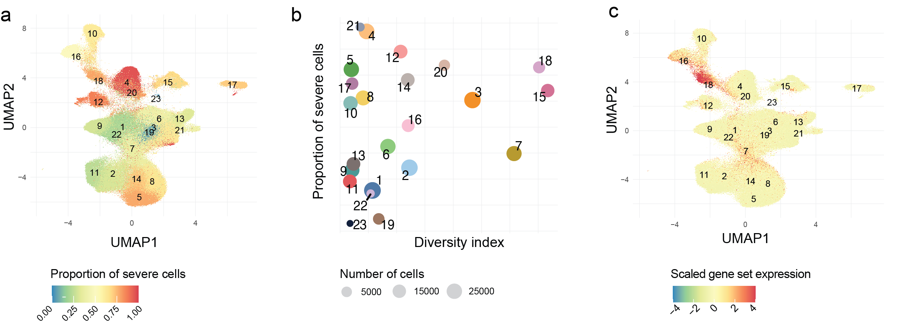
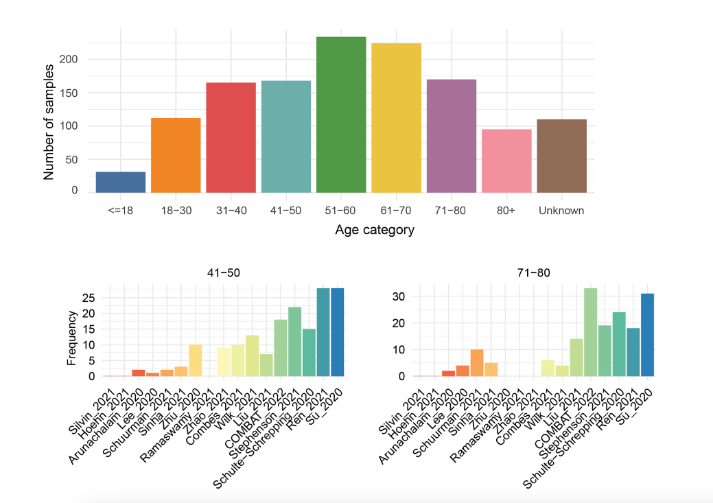
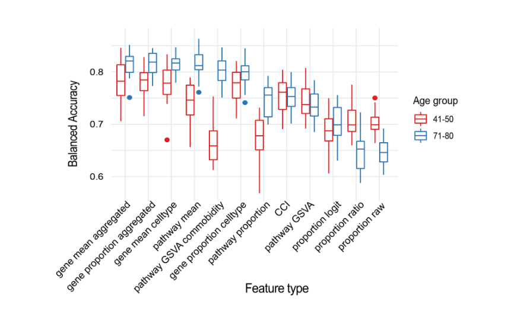
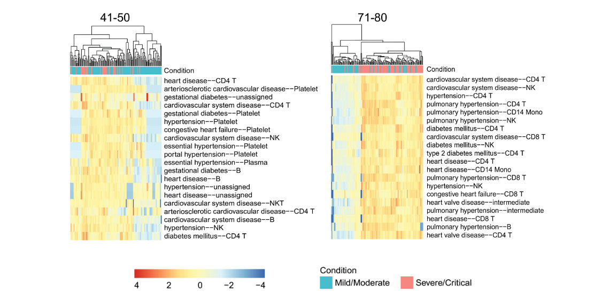

Scope+ User Tutorial
What is Scope+?
Scope+ allows you to develop your own single-cell atlas portal using its architecture, and you only need three input files to make this happen!
Apply Scope+ to an example atlas dataset
This is a quick and minimal tutorial to show you how to adopt Scope+ architecture to your own dataset using our example dataset (which resemble yours in terms of format)!
- Install the system dependencies listed above, MongoDB, Python, MongoDB Compass (optional) and sqlite.
Dependencies
- MongoDB installed (version 5.0.9 or greater is recommended) Download
- Python installed (version 3.9 is recommended) Download
- MongoDB Compass installed (version 1.39.4 is recommended but this is optional, for visual operation of the database) Download
-
sqlite installed (version 3.37.0 is recommended) Download
-
Create a database in MongoDB named cov19atlas_new, and create three collections namely under the database
- single_cell_meta_v4
- umap
- matrix
-
Import the three example data files, which we provided for you, into MongoDB using MongoDB Compass, make sure all value fields during import needs to be in STRING format.:
- single_cell_meta_v4 (importdata_meta.csv)
- umap (importdata_umap.csv) and
- matrix (importdata_matrix.csv).
-
Download Scope+ web portal resources below into a directory i.e. your $HOME/flask_resources/, without them the web portal can't be initialized
- features.tsv - example gene list
- db.sqlite - example user database
-
Clone the repository, install the packages for Scope+ and run the web portal code
$ git clone https://github.com/hiyin/scopeplus.git
$ cd scopeplus
# create virtual environment
$ python3.9 -m pip install --upgrade pip
$ python3.9 -m venv venv # this installs the venv folder in the current directory
$ source venv/bin/activate
$ pip install -r requirements.txt
# deactivate the environment and reactivate it for a fresh start
$ deactivate
$ source venv/bin/activate
# initialize database download it and put it in flask_resources/ directory in yor $HOME
mv db.sqlite $HOME/flask_resources/
mv features.tsv $HOME/flask_resources/
# set environment
$ export FLASK_ENV=development
$ export FLASK_APP=manage.py
# launch
$ flask run
You will have local version of Scope+ running at 127.0.0.1:5000 by default.
You shall be able to have your own version of Scope+ running with your custom data files if you could modify to the data format same as the example files we used here for demonstration!
Prepare your data for Scope+ reimplementation
Now is your turn! If you are able to follow the small tutorial above, try replace the DB with your own integrated atlas-scale datasets. we assume that you start with the two common files after you have collected your single-cell RNA-seq data i.e. meta data, and a count matrix folder in 10X single-cell sequencing format.
You could integrate your datasets using your favorite integration tools, we used scMerge2 in our case.
Below is a pipeline to help you to process the files using example dataset. We asssume that you have a metadata file following our structures (if not please edit according to our example metadata)
-
Example metadata: metadata
-
Example 10X format matrix folder files:
Download them and save as into a new directory named hoehn_2021/
meta <- read.csv("importdata_metadata.csv")
# Prepare matrix db collection source
hoehn <- Read10X("hoehn_2021/", gene.column = 1) # default tsv.gz files (downloaded from Covidscope)
srt_obj <- CreateSeuratObject(hoehn)
rownames(meta) <- meta$id
metadata_frame <- srt_obj@meta.data
univ_meta <- cbind(metadata_frame, meta)
srt_obj <- AddMetaData(srt_obj, univ_meta)
# if the user didn't have pca
srt_obj <- NormalizeData(srt_obj)
srt_obj <- FindVariableFeatures(srt_obj, selection.method = "vst", nfeatures = 2000)
all.genes <- rownames(srt_obj)
srt_obj <- ScaleData(srt_obj, features=all.genes)
srt_obj <- RunPCA(srt_obj, features = VariableFeatures(object = srt_obj))
srt_obj <- RunUMAP(srt_obj, dims = 1:40)
# Prepare UMAP file for database import
umap_coord <- dplyr::as_tibble(data.frame(srt_obj@reductions$umap@cell.embeddings
), rownames = "id")
colnames(umap_coord) <- c("id", "UMAP1","UMAP2")
write.csv(umap_coord, file="importdata_umap.csv", row.names = FALSE)
# Prepare matrix file for database import
# input: a sparse matrix with named rows and columns (dimnames)
# returns: a data frame representing triplets (r, c, x) suitable for writing to a CSV file
sparse2triples <- function(m) {
SM = summary(m)
D1 = m@Dimnames[[1]][SM[,1]]
D2 = m@Dimnames[[2]][SM[,2]]
data.frame(row=D1, col=D2, x=m@x)
}
# get matrix file
towrite_matrix <- sparse2triples(srt_obj[["RNA"]]@counts)
colnames(towrite_matrix) <- c("gene_name", "barcode", "expression")
# write matrix data
write.csv(towrite_matrix, file="importdata_matrix.csv", row.names=FALSE)
Demo
If the whole reimplementation process is successful by following the tutorial, you will have a working atlas web portal same as the one at Youtube video below:
Explanation on input files
Example input files are provided for your reference. You need the following three input files in Scope+ to be imported into MongoDB and they needed to be in .csv format.
- Metadata
- Count matrix
- UMAP coordinates
We assume that users have analyzed their data in one of the most popular software Seurat in R. You can output your three input files from your Seurat object.
- Metadata: your own metadata file in .csv format i.e. meta.csv
- Count matrix:
# convert the sparse count matrix into dense matrix
# https://stackoverflow.com/questions/4558277/write-a-sparse-matrix-to-a-csv-in-r
sparse2triples <- function(m) {
SM = summary(m)
D1 = m@Dimnames[[1]][SM[,1]]
D2 = m@Dimnames[[2]][SM[,2]]
data.frame(row=D1, col=D2, x=m@x)
}
# get matrix file
dense_matrix <- sparse2triples(srt_obj[["RNA"]]@counts)
colnames(dense_matrix) <- c("gene_name", "barcode","expression")
write.csv(dense_matrix, file="matrix.csv", row.names=FALSE)
For large-scale single-cell data we also provide utilities to convert the 10X single-cell RNA-seq data to MongoDB import collection .csv format at here.
- UMAP: If you have run the UMAP step, otherwise please refer to Seurat UMAP method and run it first.
umap_coord <- dplyr::as_tibble(data.frame(seurat_object@reductions$umap@cell.embeddings), rownames = "id")
colnames(umap_coord) <- c(”id“, “UMAP1”,”UMAP2”)
write.csv(umap_coord, file=”umap.csv”, row.names=FALSE)
Input file format
| **File name** | **Collection name** | **Columns** |
| metadata.csv | single_cell_meta_v4 | ["id", "meta_age_category", "meta_sample_id2","meta_patient_id", "meta_dataset", "level2", "meta_severity", "meta_days_from_onset_of_symptoms", "meta_outcome", "meta_gender", "Country"] |
| matrix.csv | matrix | ["barcode", "gene_name","expression"] |
| umap.csv | umap | ["UMAP1","UMAP2", "id"] |
Database collection
| **Column name** | **Value format** | **Description** | **Example** |
| Collection schema: **single_cell_meta_v4** | id | String | Cell barcode (unique) |
| meta_patient_id | String | Patient identifier | |
| meta_sample_id2 | String | Sample identifier (one patient may have multiple samples) | |
| Country | String | Country origin of the dataset | |
| meta_age_category | String | Age category in intervals | e.g. “18-30” |
| level2 | String | Cell type predictions | |
| meta_severity | String | The severity of the symptoms regarding patient | |
| meta_dataset | String | Dataset origin | |
| meta_days_from_onset_of_symptoms | Number | Days from the onset of symptoms | |
| meta_gender | String | Gender | i.e. “female” or “male” |
| meta_outcome | String | Health outcome | i.e. “diseased”, “discharged” etc. | Collection schema: **umap** |
| id | String | Cell barcode (unique) | |
| UMAP1 | String | X-coordinate of the cell | |
| UMAP2 | String | Y-coordiante of the cell | |
| Collection schema: **matrix** | barcode | String | Cell barcode (unique) |
| gene_name | String | Name of the gene expressed in the cell | e.g. CD19 |
| expression | Number | ||
How to use Covidscope data
For any user would like to use Covidscope data, downloaded from https://covidsc.d24h.hk/data, Covidscope provide the data in 10X format therefore you can read the three .gz files using Seurat package's function Read10X. An example is given below
data <- Read10X("lee_2020/", gene.column = 1) # default tsv.gz files (downloaded from Covidscope)
srt_obj <- CreateSeuratObject(data)
Case study with Covidscope:
The integrated COVID-19 data from 20 studies with carefully curated metadata architected under Scope+ enables many novel possibilities for downstream analyses. For example, using condition outcomes and cell type labels, one could perform case-control studies as well as multi-conditional studies examining composition change, expression shift, perturbation analysis and a range of other analyses in a cell type-specific manner. By comparing multiple datasets, researchers can identify novel findings and validate them across multiple datasets. Integrating multiple data sets significantly increases the sample size, which opens the opportunity to examine various sub-populations which is not possible with individual studies. In this user guide, we outline two such case studies.
Case study 1: Combining 20 studies allows the identification of common signatures in severe patients
Case study 1 examines the existence of a common signature that distinguishes cells found in mild and severe COVID-19 patients across multiple data sets.
One of the functionality of Covidscope is that it allows us to selectively focus on specific cell types and retrieve all relevant data. Here, we focus on the CD14 monocytes cell type as this is one of the key players in COVID-19.
Once we download all CD14 monocytes cells from the 20 studies from Covidscope, we can run clustering algorithms to obtain clusters and identify clusters that are significantly enriched in the amount of severe cells.
# we can use the Leiden community detection algorithm implemented in monocle3 for clustering
# monocle3 has been recommended as one of the best clustering algorithms in a highly cited benchmarking paper on single-cell clustering (Yu, L., Cao, Y., Yang, J. Y., & Yang, P. (2022). Benchmarking clustering algorithms on estimating the number of cell types from single-cell RNA-sequencing data. Genome biology, 23(1), 49.)
library(monocle3)
data <- cluster_cells(data) # assuming you have the expression matrix of all CD14 monocytes cells
clustering_result <- data@clusters$UMAP$cluster_result$optim_res$membership
Based on the clustering result, cluster 18 has > 75 % of severe cells, suggesting enrichment of this cluster in severe cells. Additionally, we used Shannon’s diversity index to quantify diversity of the cells in each cluster belonging to multiple datasets. Cluster 18 has high Shannon’s diversity index, suggesting this cluster contains cells from multiple datasets that have clustered together due to similar expression pattern.

Next, we use marker gene identification algorithm to find marker genes to learn the characteristic of this cluster.
# here we use scran, a popular single-cell analytical package to find marker genes in cluster 18.
groups <- clustering_result # the clustering result from previous stsep
groups[groups != “cluster18] <- “remaining clusters” # make the comparison to be cluster 18 vs remaining clusters
markers <- findMarkers( data, groups = groups)
We found the top 10 marker genes to be: IGLC3, IGLC2, IGHG2, IGHM, IGHG4, IGHG3, IGLC7, DEFA1B, DEFA1B, FCER1A, IGHA2. These genes highlight significant immune activation, both in the adaptive (antibody production) and innate (defensins, inflammatory mediators) arms of the immune system. These genes are potentially related to the severe inflammation or cytokine storms observed in the severe response. Specifically: IGLC gene family belongs to the immunoglobulin light chains and suggests significant B-cell activation. IgA is important for mucosal immunity, particularly in the respiratory tract. DEFA gene family encode antimicrobial peptides. This indicates the innate immune system is attempting to control bacterial infections, which are common in severe cases. Increased FCER1A expression could point to an enhanced inflammatory response. This highlights the power of the atlas in revealing common immune signatures across different datasets.
Case study 2: Combining 20 studies allows age - based comparison
The power of combining multiple data sets is that it opens the opportunity to examine various sub-populations across many data sets. For example, the figure below shows the age distribution of all samples in the 20 datasets. Each age group has large number of samples that can be used for downstream analysis. In this case study, we compare the molecular characteristics underlying mild and severe patients and assess how they differ in the two age groups of 41- 50 and 71-80. Note that this comparison is not possible if we only had individual study, due to the limited number of individuals in each age group in individual study.

To assess the molecular characteristics behind each patient, we can first extract a series of patient-based feature representation from the cellxgene expression matrix. This can be constructed using the package scFeatures which generate a range of feature types belonging to cell type proportion, cell type gene expression, bulk gene expression, pathway expression and cell cell communication. Note we have already computed the feature representations for all individuals from the 20 datasets and is also available for visualisation on the Covidscope web portal.
library(scFeatures)
scfeatures_result <- scFeatures(data = data_expression_matrix, # assuming you have downloaded the gene expression matrix from the 41-50 and 71-80 age group
sample = data$sample, # the sample id of each cell
celltype = data$celltype, # the cell type of each cell
type = "scrna", #specify this is a single-cell RNA-seq data
species = "Homo sapiens")
Once we generated the features, we can visualise the features as shown on the Covidscope website, as well as assess whether the features can distinguish between mild and severe patients in the two age groups.
Here we use classifyR, which provide wrapper functions for multiple machine learning classification model and cross-validation function.
library(classifyR)
classifyr_result <- crossValidate(scfeatures_result,
outcome,
classifier = "SVM",
nFolds = 3,
nRepeats = 5,
nCores = 5 )
In the accuracy boxplot below, we can see that each of the feature types have different performance for the 41-50 and the 71-80 age group. For example, some feature types are able to accurately distinguish the mild and severe patients in the 41 - 50 age group, but not for the 71-80 age group, and vice versa.
Next, we select the feature type “pathway GSVA comorbidity” and do further exploration. This feature type represents the pathway enrichment of genes in multiple comorbidity conditions. It achieved 80% accuracy on distinguishing the mild and severe patients in the 71-80 age group, but drop to near 65% accuracy for the 41- 50 age group.

By visualing the pathway enrichment score using heatmap, it becomes clear that in the 71-80 age group, the severe/critical patients have higher pathway enrichment in comorbidities such as heart disease, pulmonary disease and hypertension compared to the mild/moderate patient. In comparison, there is no clear distinguishing pattern in the 41-50 age group. This is consistent with the general belief that older individuals with pre-existing health conditions are more vulnerable to severe outcomes from COVID-19.
